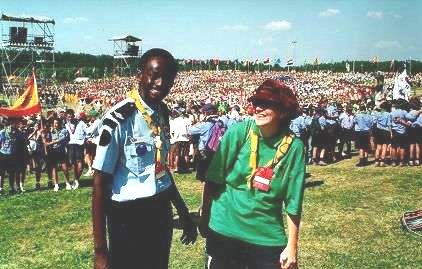

Organización Mundial del Movimiento Scout
-
Ocho tesoros
-
Medios de comunicación
-
Escultismo y Paz
-
UNESCO


 Escultismo y paz
Baden-Powell, Hombre de Paz
He aquí algunas citas de la exposición del Jamboree Scout Mundial. Serán útiles a todos los responsables y a todos los Scouts del mundo como una fuente de inspiración y de meditación sobre nuestro fundador, nuestro movimiento y su misión en el mundo.
Un campo experimental y un libro
En agosto de 1907, en la isla de Brownsea, BP reúne cerca de 20 jóvenes provenientes de distintos medios sociales. Los participantes construyen cabañas, aprenden técnicas de vida al aire libre, cantan, juegan, practican habilidades deportivas, intercambian experiencias y ayudan a la población. El entusiasmo es impresionante. Ha nacido el Movimiento Scout.
Cuando en 1908 publicó "Scouting for Boys", jamás pensó que acaba de escribir la obra que iba a cambiar la vida de milliones de ellos en todo el mundo. Proyectando lo que había sido su experiencia personal, invitá a los jóvenes a tomar su vida en sus manos y a ser responsables de su destino.
Al año de publicar el libro, en Inglaterra había 50.000 jóvenes scouts. El prestigio del Movimiento atraviesa los mares y en mayo de 1909 el Movimiento se funda en Chile, país que había sido visitado por Baden-Powell dos meses antes. A partir de ese momento, el Movimiento Scout se convierte en internacional.
Al servicio de los jovenes
Todo el mundo sabe que "Siempre listo" es el lema scout, pero es más que simple lema. Es una invitación a aprender y a descubrirse, a dar lo mejor de sí mismo durante toda la vida.
"Siempre listo" es una opción de ser autónomo, solidario, responsable y compromyido.
- Una persona autónoma... capaz de tomar sus propias opciones y gobernar su vida.
- Una persona solidaria... capaz de compartir y actuar con los demás.
- Una persona responsable... capaz de asumir sus decisiones, compromyerse y lleva sus
proyectos hasta el final.
- Una persona compromyida... capaz de elegir una causa, un ideal y ser consecuente con sus valores.